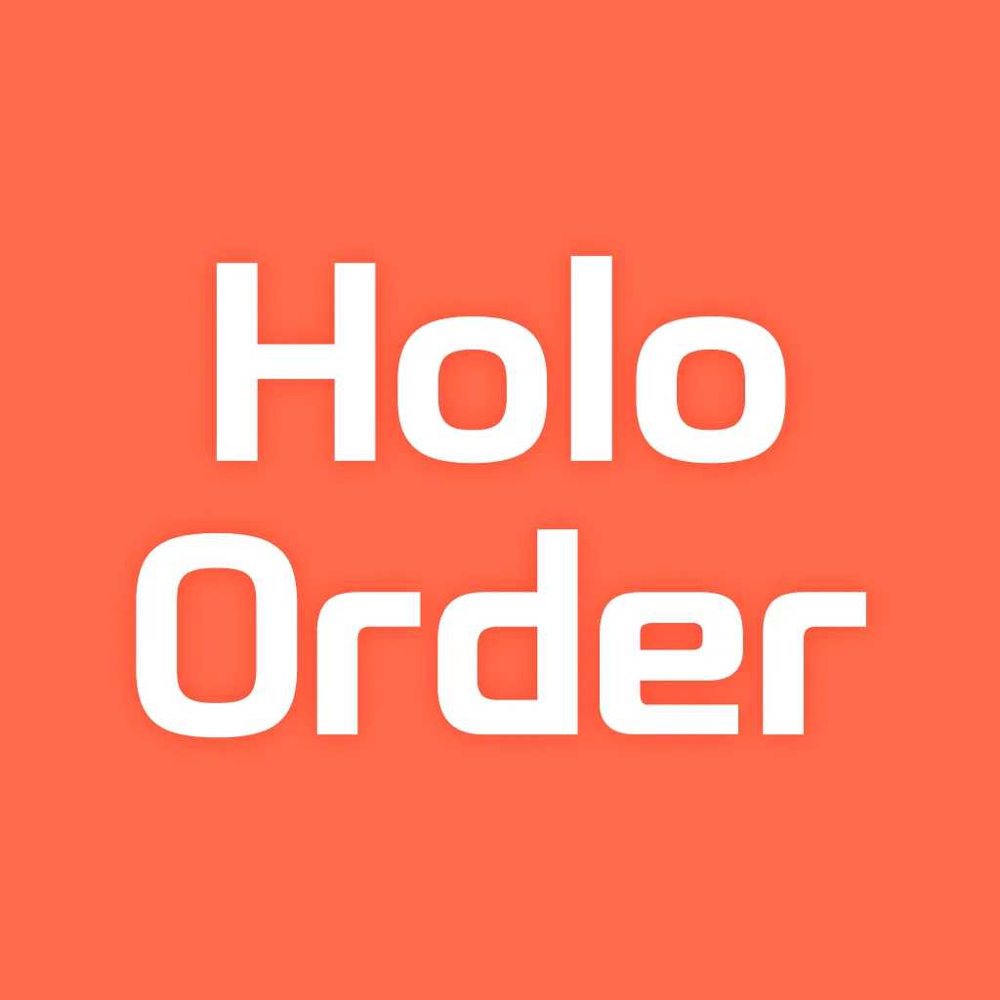
홀로그램 AI 키오스크
홀로그램 화면과 대화하며 주문하는 카페 키오스크입니다. Gemini API를 붙여 주문 대화가 오가는 화면의 프론트엔드를 구현했습니다.
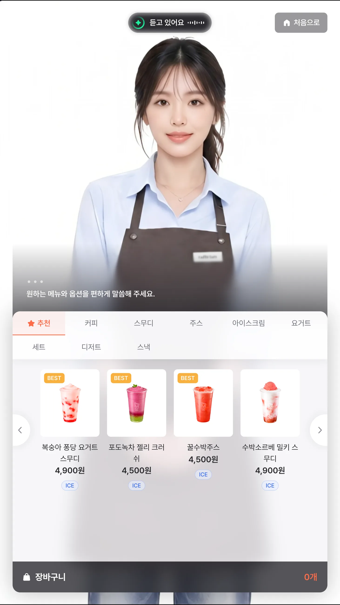
화려함보다 꾸준함을 중요하게 생각합니다. 요구사항을 꼼꼼히 확인하고 동료와 소통합니다. 익숙한 방식에 머무르지 않고, 배우고 기록하며 서비스를 개선합니다.

홀로그램 화면과 대화하며 주문하는 카페 키오스크입니다. Gemini API를 붙여 주문 대화가 오가는 화면의 프론트엔드를 구현했습니다.

장애인 구직자를 위한 고용 플랫폼입니다. 장애 유형에 따라 면접 진행 형식과 화면의 지원 방식이 달라지는 맞춤 면접이 핵심이고, 그 위에 공고 조회와 이력서 작성, 결과 리포트가 이어집니다. 구직자·기업·복지기관 세 사용자 그룹의 화면을 웹 접근성 기준에 맞춰 만들었습니다.
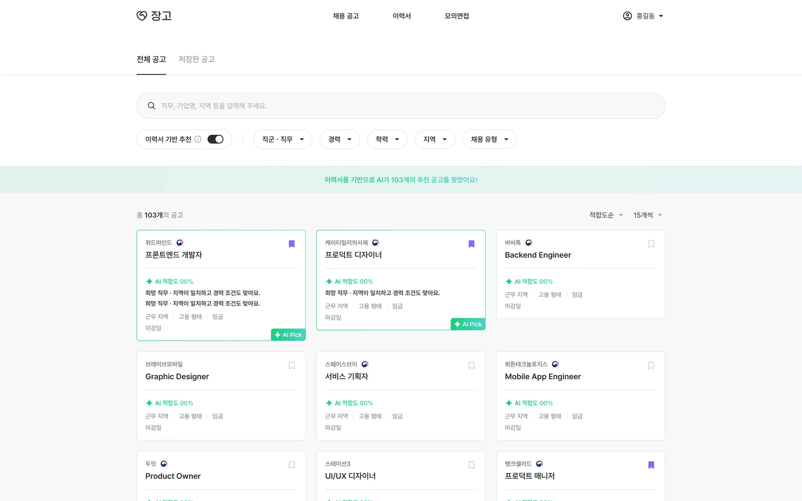
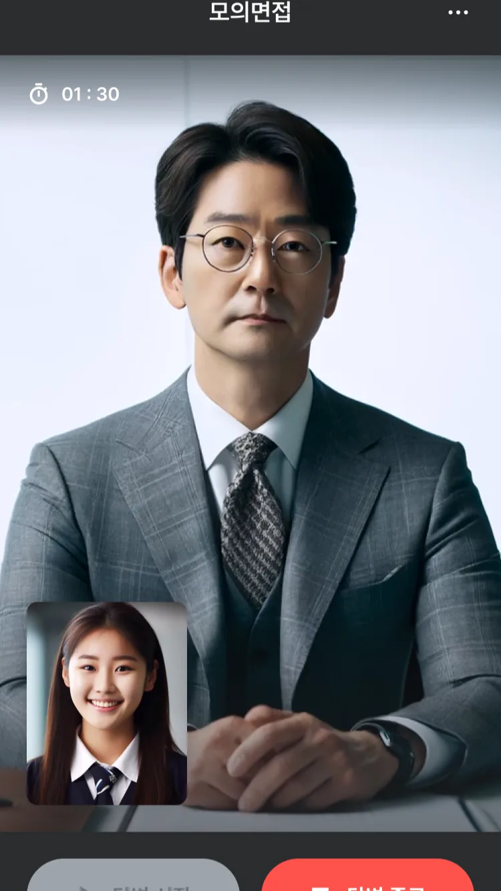
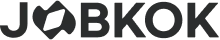
채용 공고를 보고, AI 추천 공고를 열고, 이력서를 쓰고, 그 이력서로 AI 모의면접을 본 뒤 결과 리포트를 받는 흐름을 하나로 묶은 채용 플랫폼입니다. 구직자와 기업 양쪽 화면의 UI/UX 개발과 AI 면접 분석 연동을 맡았습니다.
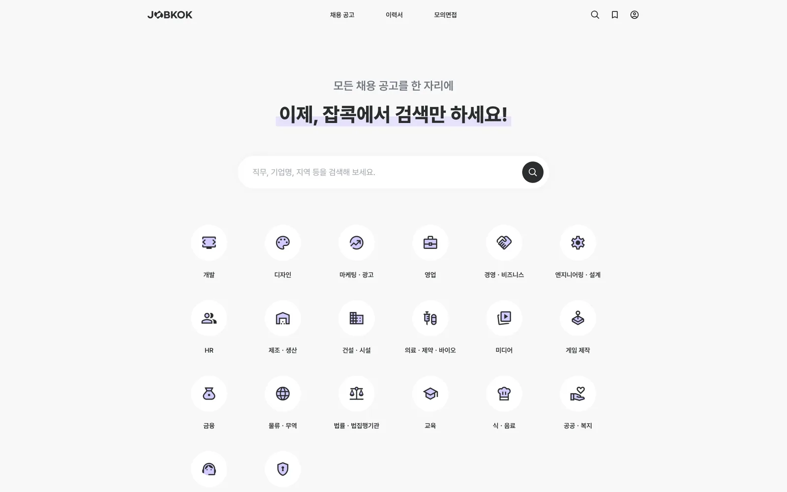
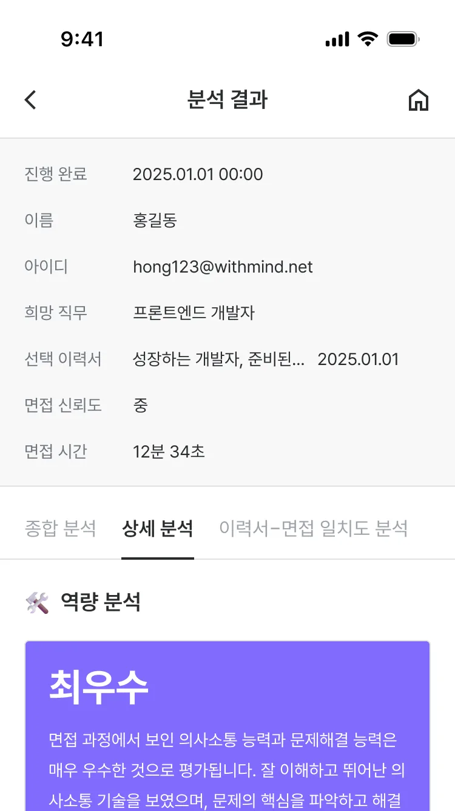
초등학생이 듣기·말하기·읽기·쓰기를 탐험하듯 학습하고, 선생님은 학급의 진단·학습 현황을 통계로 확인하는 교육 서비스입니다. 프로젝트 초기 구축이 아니라, 이미 운영 중이던 학생용 서비스의 고도화와 선생님용 관리 페이지 개발에 참여했습니다.
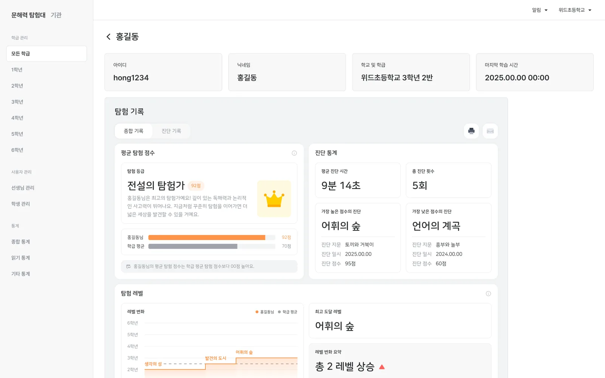
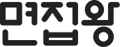
대입 면접과 항공사 승무원 면접을 한 곳에서 준비하는 AI 모의면접 서비스입니다. 진로를 고르면 그에 맞는 가이드와 심층 질문이 이어지고, 응시가 끝나면 태도·음성 분석 리포트를 받습니다. 준비 안내부터 응시, 결과 리포트까지 이어지는 화면을 프론트엔드로 구현했습니다.
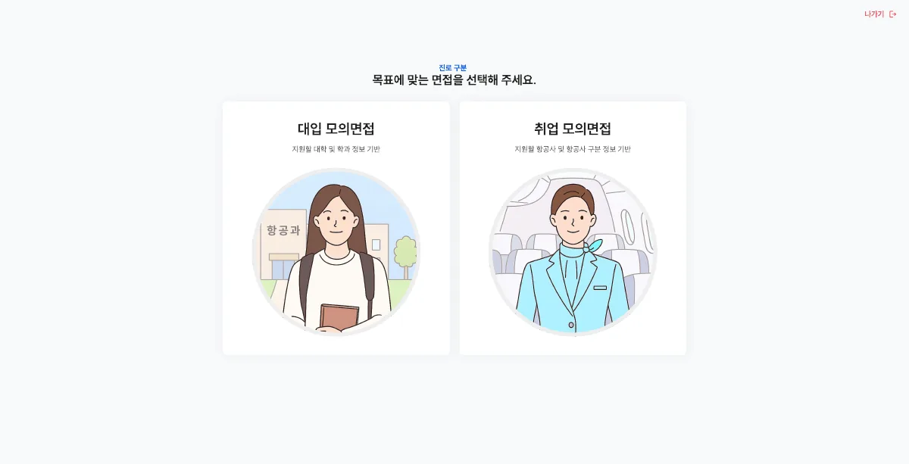
심부전 반려동물의 심박과 호흡을 웨어러블로 실시간 확인하는 두리틀 시리즈입니다. 동물병원 입원실에서 환자별 수치를 한눈에 보는 수의사용 앱이 중심입니다. 수의사용 앱의 환자 모니터 화면 구성과 공식 웹사이트 리뉴얼을 담당했습니다.
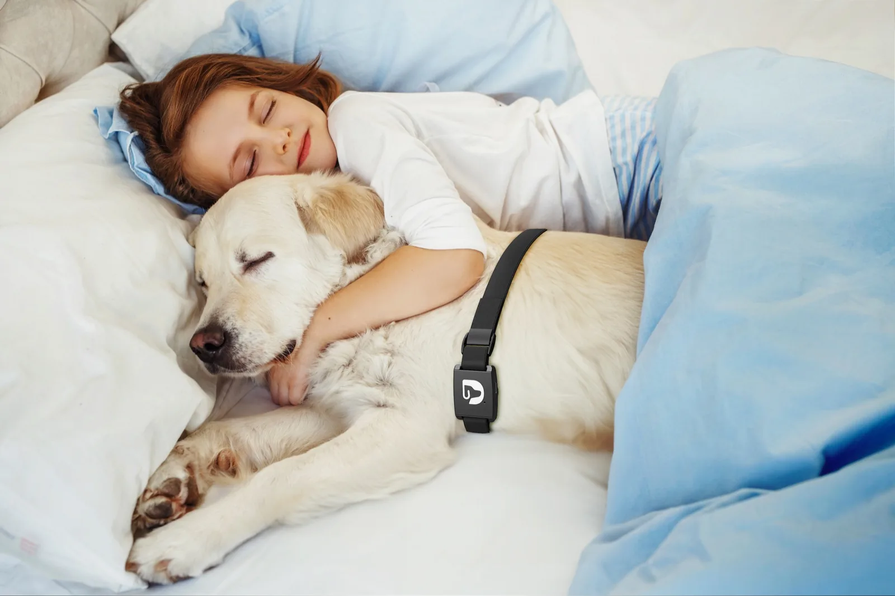
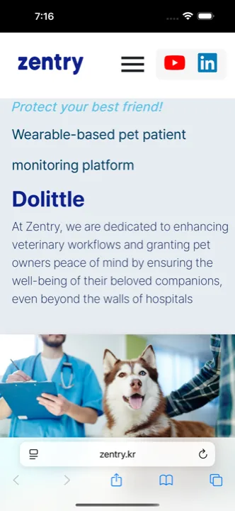
코로나로 멈춘 학원 커뮤니티를 메타버스 오피스로 옮긴 창업 프로젝트입니다. 도트 그래픽 맵에 접속해 같은 공간에서 공부하고, 그 안에서 과제·멘토링·대화가 오갑니다. 랜딩부터 맵과 커뮤니티 화면까지 웹으로 구현했습니다.
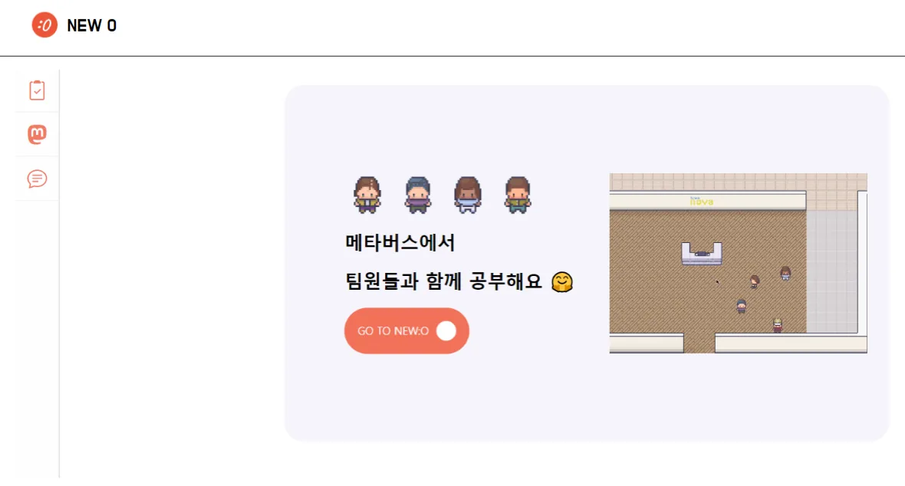
에너지 사용 데이터를 1인칭 시점으로 걸어 다니며 보는 가상 전시관입니다. 팀장으로 기획을 이끌고 Unity로 전시 공간과 관람 동선을 만들었습니다. 한전KDN 데이터 결합·활용 아이디어 공모전에서 장려상을 받았습니다.
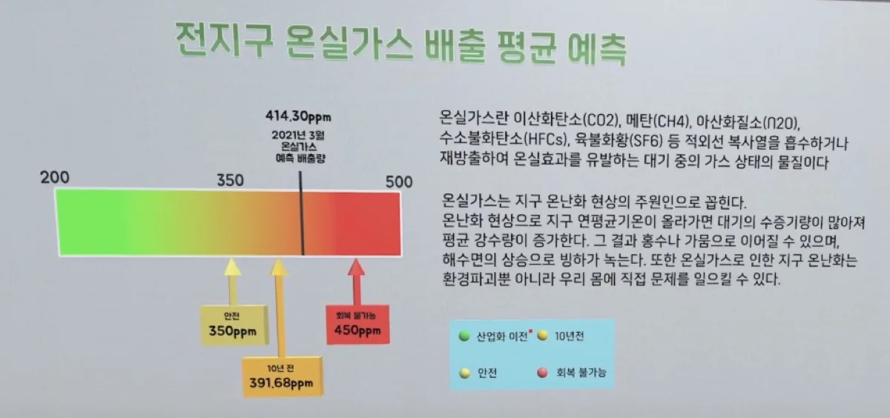
Frontend Developer
실용성을 쫓는 개발자입니다. 화면을 예쁘게 만드는 것만큼, 그 화면이 실제 업무와 사용 환경에서 버티는지를 중요하게 봅니다.
동물병원 수술실에서 쓰이는 모니터링 앱처럼 실패하면 안 되는 화면과, 장애인 구직자가 쓰는 서비스처럼 접근성이 곧 사용 가능 여부를 결정하는 화면을 만들어 왔습니다.